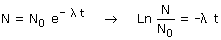
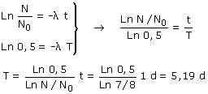

La actividad es proporcional al número de núcleos existentes. Si la actividad ha disminuido 1/8 al cabo de un día es porque se han desintegrado 1/8 de los núcleos y por tanto quedan 7/8 de los existentes
Ecuación de desintegración:
 |
N/N0 = 7/8 |
Relación entre constante de desintegración y período de semidesintegración:

Combinando las dos expresiones resulta un sistema de dos ecuaciones:
